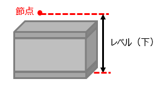
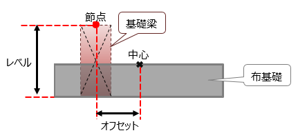

| フーチングの生成 |
| 1 |
断面ID（id_section）が一致するコンクリート形状が連続以外のRC基礎断面タイプを取得する。タイプが見つからない場合はタイプを生成する。 |
| 2 |
節点ID（idNode）の座標を取得する。 |
| 3 |
取得した座標のZ座標から配置するRevitのレベルを取得する。 |
| 4 |
取得したRC基礎断面タイプ、節点座標位置からフーチングを生成する。 |
| 5 |
フーチング生成後、各インスタンスパラメータに属性を設定する。
対応する既存のインスタンスパラメータが無い属性はインスタンスパラメータを新規に追加し設定する。
|
| 6 |
レベルからの高さオフセットは節点から下端までの距離とする。

|
| 布基礎の生成 |
| 1 |
断面ID（id_section）が一致するコンクリート形状が連続のRC基礎断面タイプを取得する。タイプが見つからない場合はタイプを生成する。 |
| 2 |
始端節点ID（idNode_start）、終端節点ID（idNode_end）から座標を取得する。 |
| 3 |
取得したRC基礎断面タイプ、節点座標位置から布基礎を生成する。 |
| 4 |
布基礎生成後、各インスタンスパラメータに属性を設定する。
対応する既存のインスタンスパラメータが無い属性はインスタンスパラメータを新規に追加し設定する。
|
| 5 |
布基礎は底板部分を表し、基礎梁とは別にオフセットとレベルを指定する。 |
| 6 |
布基礎のオフセット、レベルは節点からの距離とする。

|
| 杭基礎の生成 |
| 1 |
断面ID（id_section）が一致するRC杭断面のタイプを取得する。タイプが見つからない場合はタイプを生成する。 |
| 2 |
節点ID（idNode）から座標を取得する。 |
| 3 |
取得したRC杭断面タイプ、節点座標位置から杭基礎を生成する。 |
| 4 |
杭基礎生成後、各インスタンスパラメータに属性を設定する。
対応する既存のインスタンスパラメータが無い属性はインスタンスパラメータを新規に追加し設定する。
|
| 5 |
杭長は変換する杭種に応じて変換する。
＜場所打ち杭＞
| ST-Bridge属性 |
Revitパラメータ |
| length_all |
杭全長 |
寸法
|
| length_head |
拡頭部_長さ |
構造
|
| length_foot |
拡底部_長さ |
＜既製杭＞
| ST-Bridge属性 |
Revitパラメータ |
| ストレート |
length_all |
杭種1_長さ |
構造
|
| 脚部拡大 |
(length_all)-(length_foot) |
杭種1_長さ |
| length_foot |
杭種2_長さ |
| 頂部拡大 |
length_head |
杭種1_長さ |
| (length_all)-(length_head) |
杭種2_長さ |
| 両端拡大 |
length_head |
杭種1_長さ |
(length_all)-(length_head)
-(length_foot) |
杭種2_長さ |
| length_foot |
杭種3_長さ |
|
| 6 |
level_topは節点から杭頭までの距離とする。 |
| フーチングと杭基礎のグループ化 |
| 1 |
フーチングの節点と同じ節点IDの杭基礎を全て検索する。 |
| 2 |
節点IDが一致したフーチングと複数の杭基礎を１つのグループとしてグループ化する。 |
| 布基礎と基礎梁のグループ化 |
| 1 |
布基礎の始点と終点の節点IDが一致する梁を検索する。 |
| 2 |
節点IDが一致した布基礎と梁を１つのグループとしてグループ化する。 |